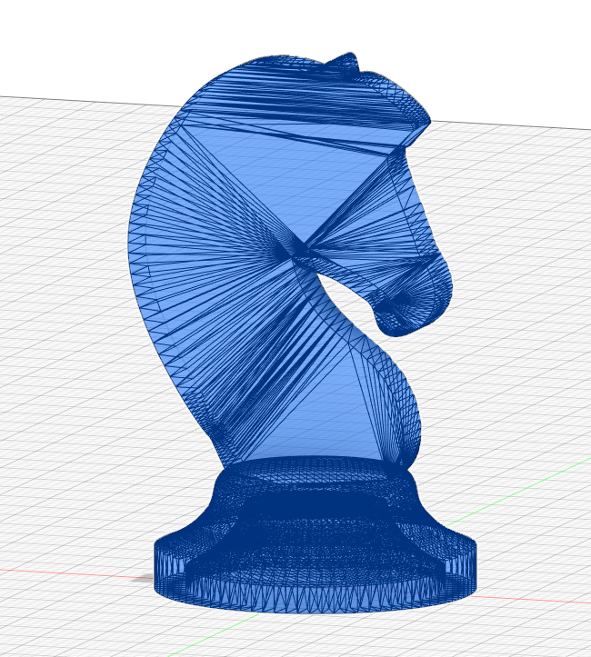
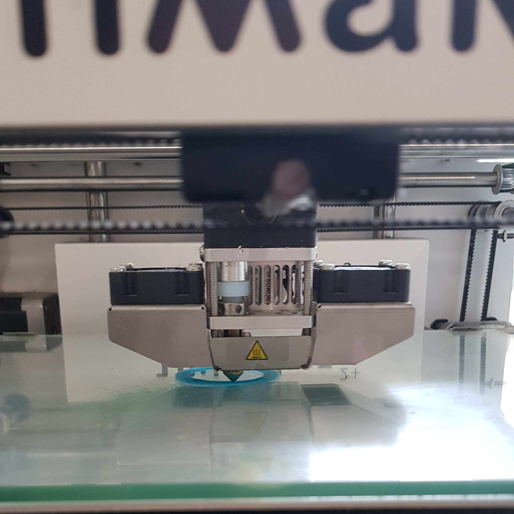
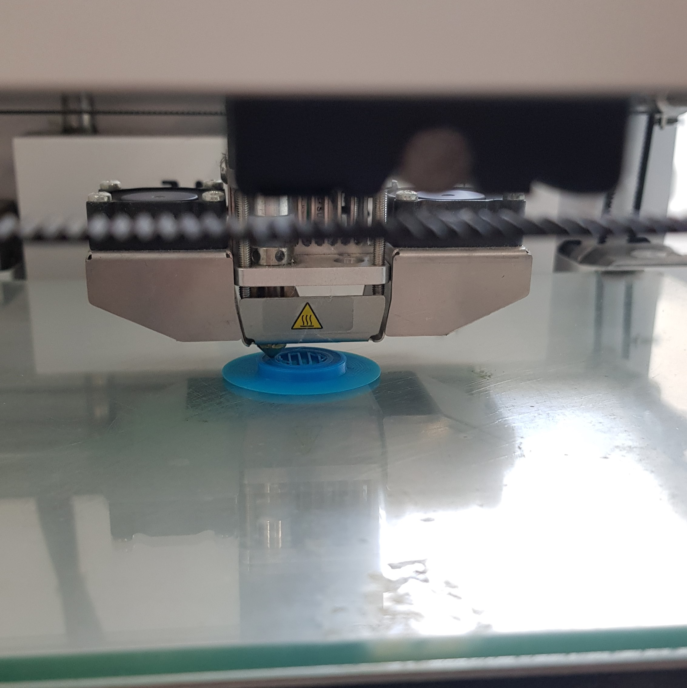
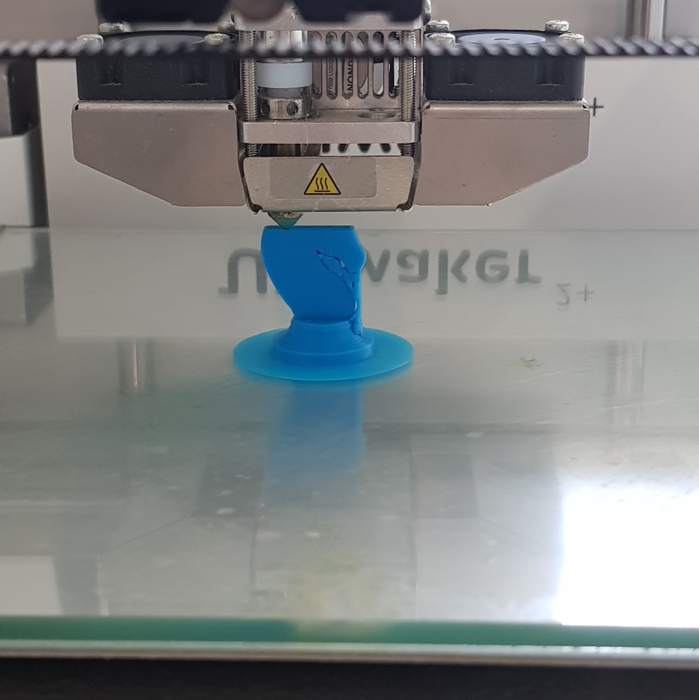
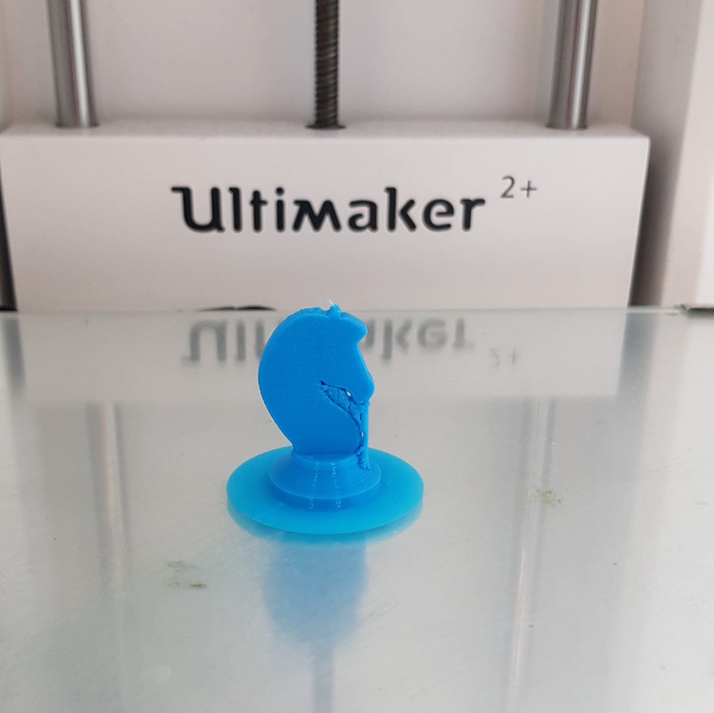
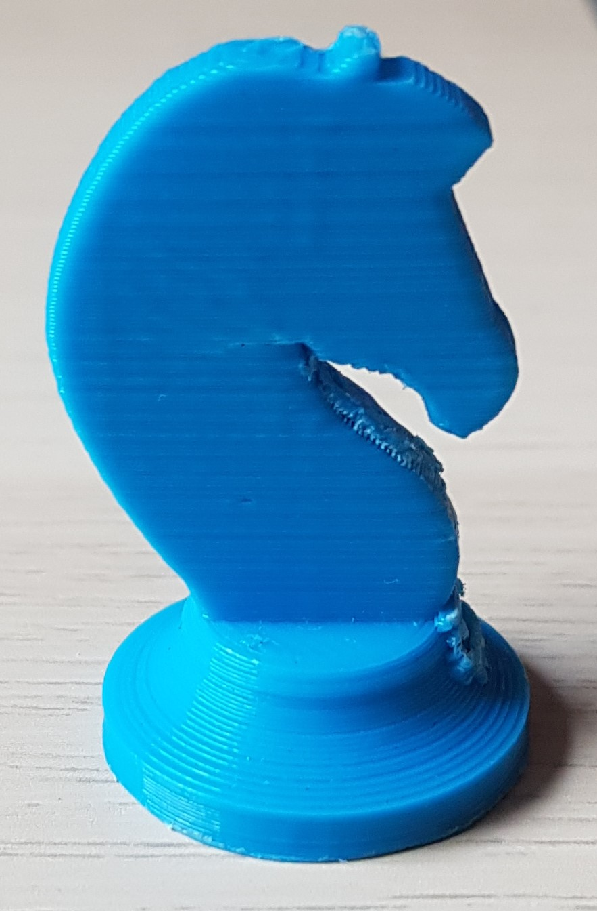
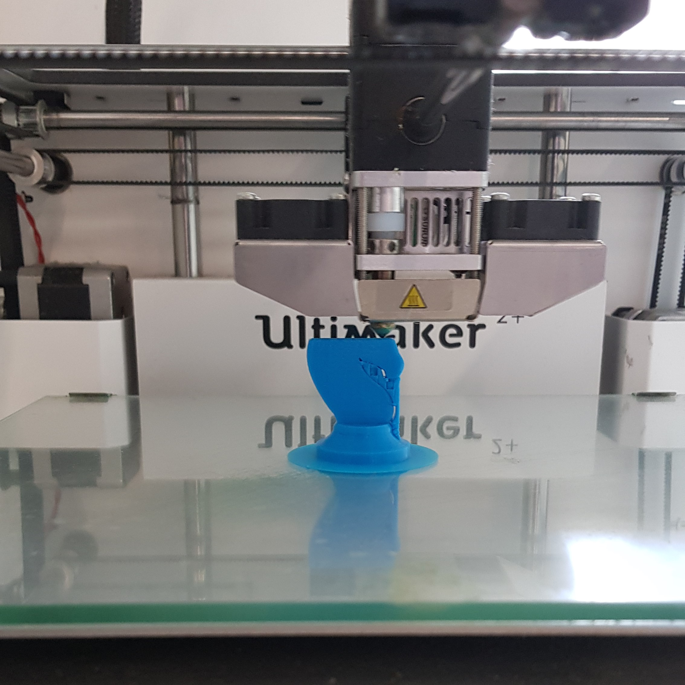
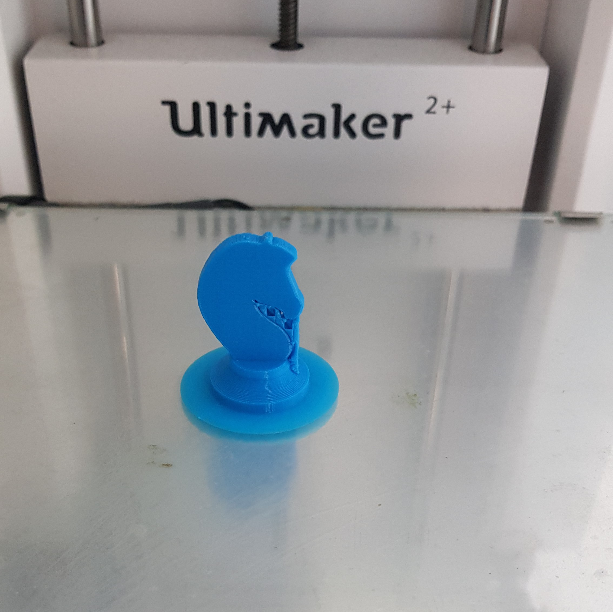

3D Printing
As an exercise in 3D printing, we used the knight chess piece from the 3D modeling assignment and printed it using the Ultimaker 2+ in the lab. To prepare the 3D model for printing, we exported the model from Fusion 360 as a .stl file. I set the refinement to medium and selected the model for exporting.
Settings
To print the object, we must slice the model for the 3D printer, and the printer will recreate the slices layer by layer.
This was done using Ultimaker Cura. The model is imported into the provided space where we can visualise the layers and
edit the settings. The print settings I used are as follows:
- Material: Generic PLA
- Nozzle: 0.4 mm
- Layer Height: 0.2 mm
- Wall Thickness: 0.8 mm
- Infill: 10%
- Print Speed: 50 nm/s
- Temperature: Default
- Supports: Yes, 45 degree
- Base Adhesion: Brim
With the original dimentions of my model, the printing time ended up too long, so I scaled it down to 70% of the original size for printing.
In order to get the file to the printer, we used SD cards found in the lab. Cura can directly export the current file to a SD card connected to the computer. I then plugged it into the printer, selected the correct file and started the printing. Below are some progress photos of the printing process.
|  |  |  |  |
This is the print after some attempts at cleaning it
While trying to remove the print supports and base, I had a lot of trouble and was unable to remove all of the supports. In addition to that, attempting to remove the supports damaged the final product slightly as some of the layers started seperating due to the force used to try and remove the support. Due to this, I decieded to try printing the chess piece again. This time, I wanted the chess piece to be a little bigger than the first one, so I scaled the print down to 90% instead of 70%, and increased the print speed to 80 nm/s to lower the printing time, as suggested by a classmate. All other settings besides the print speed were left the same as above. Below are some progress photos of the second print.
|  |  |
As the second print was slightly bigger, it was much easier to get the pilers on to the supports and pull them out, and succeded in cleaning up the print more than the initial try.
There was still some residue in hard to reach places but it was already much better. The increased print speed did not affect the quality of the print.
The completed second print is below.